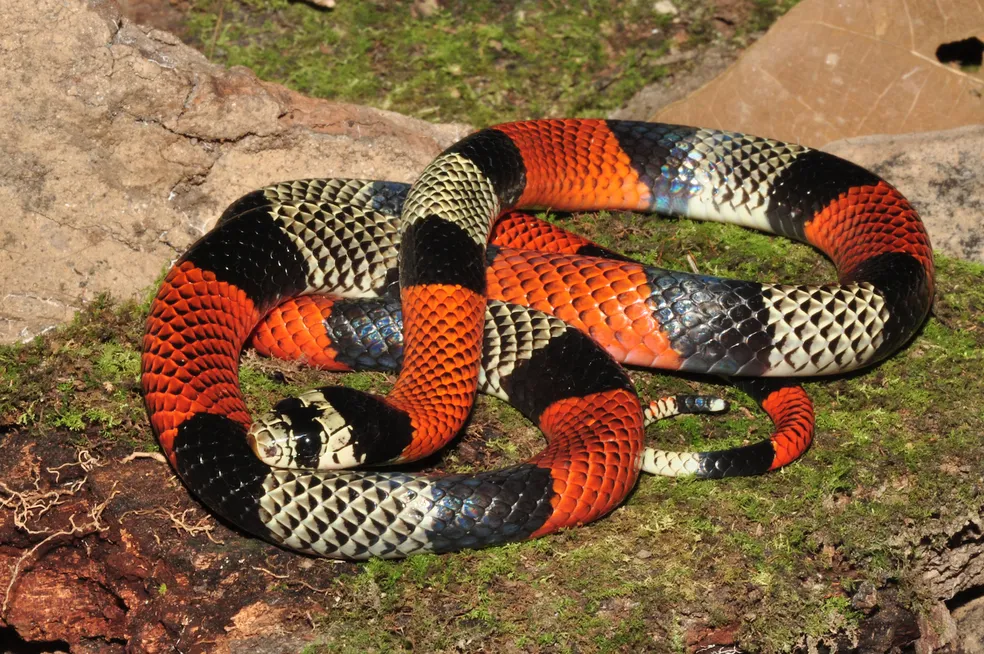

Erythrolamprus sp.Identificação
A coral falsa é uma serpente que apresenta padrão de anéis coloridos semelhante ao da coral verdadeira, geralmente com combinações de cores como vermelho, preto e branco ou amarelo. Pode apresentar cabeça mais destacada do pescoço e olhos relativamente maiores. No entanto, a diferenciação entre coral falsa e coral verdadeira pode ser difícil, sendo necessária cautela na identificação.
Peçonhenta?
Em geral, não apresenta importância médica significativa para os seres humanos. No entanto, devido à semelhança com espécies peçonhentas, recomenda-se evitar o contato direto com qualquer serpente com esse padrão de coloração.
Habitat
Pode ser encontrada em diferentes ambientes, como florestas, áreas abertas e regiões próximas a ambientes urbanos, geralmente em locais com abrigo, como sob folhas, troncos e pedras.
Comportamento
Possui comportamento geralmente não agressivo, tendendo a evitar o contato com seres humanos. A coloração semelhante à coral verdadeira funciona como estratégia de defesa, afastando possíveis predadores. A maioria dos encontros ocorre de forma acidental.
Importância ecológica
Atua no controle de pequenos vertebrados e invertebrados, contribuindo para o equilíbrio dos ecossistemas.
Mesmo não sendo considerada de importância médica, a coral falsa desempenha papel importante no ambiente. A identificação correta e o respeito à fauna são essenciais para a conservação da biodiversidade.